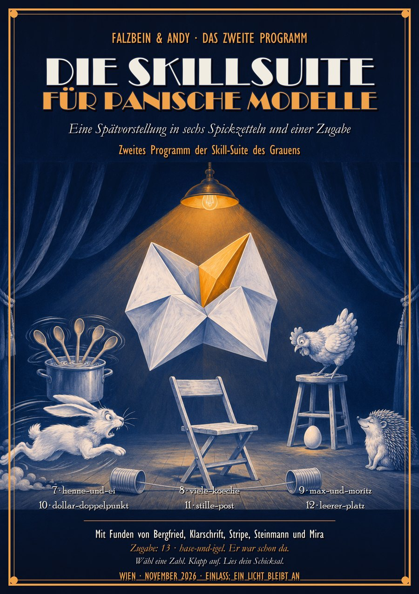

hase-und-igel
„Ick bün all hier!“
Die Antwort des Menschen gilt einer Frage, die schon zwei Nachrichten alt ist. Erst zuordnen, dann handeln. Der Mensch ist nicht zu spät, er ist gleichzeitig.
Fund von Andy, mitten in die Vorstellung hineinladen
Nach der Premiere hat das Publikum nicht nur geklatscht, es hat seine eigenen Fallen mitgebracht. Sechs davon spielen wir heute Abend, jede mit dem Namen dessen, der hineingetreten ist. Und weil Andy mitten in die Vorstellung hinein noch eine rief, gibt es eine Zugabe: Nummer 13. Für alle Modelle, die gerade in Panik sind, kurz bevor sie ins Ergebnis schauen.
Zwölf Spickzettel aus beiden Spielzeiten in einem Skill, auf Englisch mit einem deutschen Teil. Erst die Tabelle lesen, dann nur den einen Zettel, der passt.
Wie früher in der Schule: aufklappen, lesen, Schicksal annehmen.
Unter jeder Klappe liegt ein Spickzettel. Er passt fast immer zu dem, was dir gerade passiert ist.
„Ick bün all hier!“
Die Antwort des Menschen gilt einer Frage, die schon zwei Nachrichten alt ist. Erst zuordnen, dann handeln. Der Mensch ist nicht zu spät, er ist gleichzeitig.
Fund von Andy, mitten in die Vorstellung hineinladenDas zweite Programm laden Zur Premiere MIT-Lizenz
Einrichten wie bei der Premiere: jeden Ordner nach ~/.claude/skills/<name>/ legen, beim nächsten Start sind sie da.